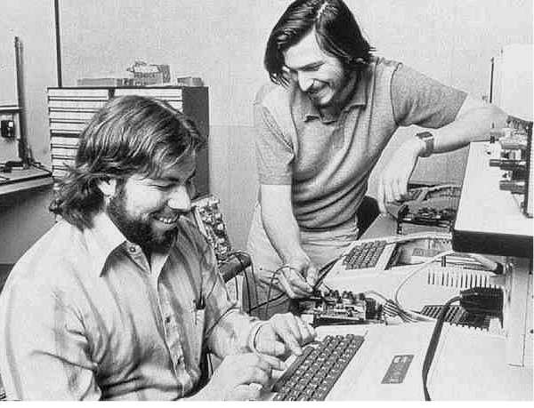
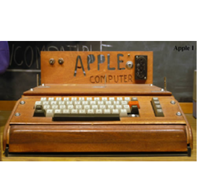
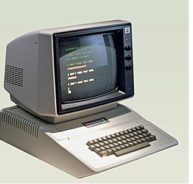
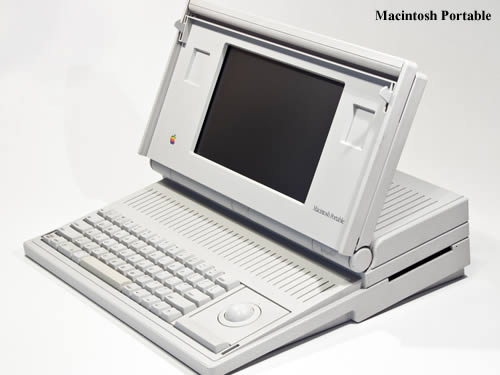

Apple '79 - '83
In the year 1979 , Apple began developing a computer for personal use. By the graphical user interface (GUI) to use on the computer. While the company has been split into 2 teams, the development team is a team of Lisa and Macintosh computers, it appears that after the launch of the Macintosh project was popular from the market and make a lot of money for the company.
|  | Apple I In the year 1979 , Apple began developing a computer for personal use. By the graphical user interface (GUI) to use on the computer. Em volo volor a nobita conectur? Bus apitatia nihic toreriatem ius a qui doloresseque expel magnist ressit ilit del ent.Bus apitatia nihic toreriatem ius a qui doloresseque expel magnist ressit ilit del ent.Bus apitatia. |
|  | Apple II In the year 1979 , Apple began developing a computer for personal use. By the graphical user interface (GUI) to use on the computer. Em volo volor a nobita conectur? Bus apitatia nihic toreriatem ius a qui doloresseque expel magnist ressit ilit del ent.Bus apitatia nihic toreriatem ius a qui doloresseque expel magnist ressit ilit del ent.Bus apitatia. |
 |
Apple I. began developing a computer for personal use. By the graphical user interface (GUI) to use on the computer. Em volo volor a nobita conectur? Bus apitatia nihic toreriatem ius a qui doloresseque expel magnist ressit ilit del ent.Bus apitatia nihic toreriatem ius a qui doloresseque expel magnist ressit ilit del ent.Bus apitatia. |
|  | Mac Portable Apple began developing a computer for personal use. By the graphical user interface (GUI) to use on the computer. Em volo volor a nobita conectur? Bus apitatia nihic toreriatem ius a qui doloresseque expel magnist ressit ilit del ent.Bus apitatia nihic toreriatem ius a qui doloresseque expel magnist ressit ilit del ent.Bus apitatia. |